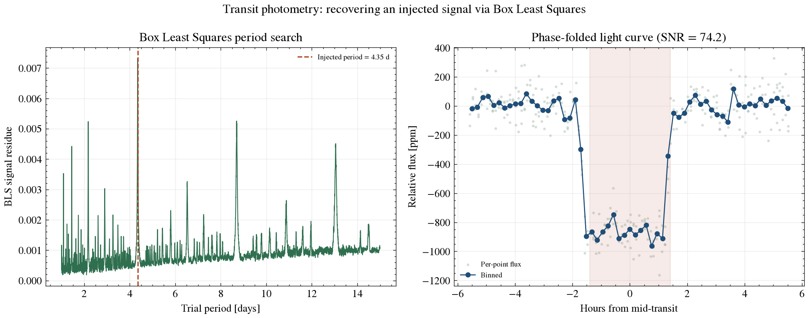

Exoplanet Detection Methods · Transit Photometry
The method behind most of the exoplanets ever found: watching a star's brightness for the small, periodic dip caused by a planet crossing its disk. This page derives the physics from first principles, works through real numbers, reports current detection statistics, and includes a live calculator built on the same equations.
A transit is a geometric shadowing event: from Earth's vantage point, a planet of radius Rp passes in front of a star of radius R★, blocking a fraction of the star's disk area. To first order, the fraction of light removed equals the ratio of the two disk areas:
δ = ΔF/F ≈ (Rp / R★)²
This is the single most important equation in transit photometry — it is why the method is sensitive to planet radius (a two-dimensional silhouette), not planet mass. It also explains, immediately, why the method favors big planets around small stars: an Earth-sized planet in front of a Sun-sized star produces a dip of only about 84 parts per million (0.0084%), while the same Earth-sized planet in front of a red-dwarf star roughly a fifth the Sun's radius produces a dip more than 20 times deeper — simply from the smaller denominator. That single fact is most of the reason M-dwarf systems like TRAPPIST-1 and LHS 475 dominate the list of JWST's terrestrial-planet atmosphere targets: the transit signal is large enough to be worth the telescope time.
A more exact version replaces the flat-disk ratio with a numerically integrated overlap area between two circles (or ellipses, for oblate planets) as a function of the planet's position — necessary once the planet is partially off the stellar limb during ingress/egress — but the simple ratio above is exact at mid-transit and is what most people mean by "the transit depth."
Duration depends on how fast the planet crosses the star's disk, which depends on the orbital period P, the star's radius R★, the orbital semi-major axis a, and the impact parameter b — how centrally the planet crosses the disk, in units of stellar radii, where b=0 is a straight line through the center and b approaching 1 is a grazing transit that clips only the limb:
Tdur ≈ (P / π) · arcsin[ (R★/a) · √((1 + Rp/R★)² − b²) ]
Two intuitions fall out of this directly. First, R★/a is small for any reasonably compact orbit, so the whole expression is small compared to P — a transit typically lasts hours even when the orbit takes days, which is why blind period searches have to check a fine grid of trial durations as well as trial periods: get the duration wrong and a real signal's transits don't stack coherently when the light curve is folded. Second, b enters as a subtraction inside the square root, so duration shrinks monotonically as b→1 — grazing transits are both shorter and, since less of the planet's disk overlaps the star, shallower and more V-shaped than centrally aligned ones, which is one of several signatures (along with the depth-versus-wavelength behavior of a real planet vs. the near-wavelength-independence of a diluted eclipsing binary) used to help rule out false positives.
A real transit light curve is not a perfect box. The star dims gradually as the planet's disk moves onto the stellar disk (ingress) and brightens gradually as it moves off (egress) — a ramp lasting roughly (Rp/R★) × the total duration, since that's how long it takes the planet's own diameter to cross the limb at the orbital velocity. Layered on top of that, the star itself is not uniformly bright across its face: it is dimmer at the limb than at the center — limb darkening — because a line of sight toward the limb passes through cooler, higher layers of the stellar atmosphere before reaching the deeper, hotter layers a line of sight toward the center reaches. The combined effect is a light curve with rounded shoulders and a slightly curved (not flat) bottom, deepest exactly at mid-transit.
The standard way to model this analytically is the Mandel & Agol (2002) formalism, which computes the exact overlap area between a stellar disk with a parameterized limb-darkening law (commonly quadratic: I(μ) = I₀ · [1 − u₁(1−μ) − u₂(1−μ)²], where μ = cos θ is the cosine of the angle from disk center) and a planetary disk at any position along the transit chord. A box-shaped search like Box Least Squares, used in this repo and in real survey pipelines as a fast first-pass detector, deliberately ignores this shape detail to search efficiently over enormous period/phase/duration spaces — it trades shape accuracy for speed, then hands promising candidates to a full Mandel & Agol fit for precise parameter extraction.
Transit photometry only works for systems that happen to be aligned close to edge-on as seen from Earth — most planetary systems are not, and simply never transit no matter how sensitive the instrument. For a circular orbit, the probability that a randomly oriented system transits is the angular size the star's disk (plus a small correction for the planet's own radius) subtends at the planet's orbital distance:
ptransit ≈ (R★ + Rp) / a → R★/a (when Rp ≪ R★)
This falls off linearly with orbital distance — a hot Jupiter on a several-day orbit might have a transit probability of several percent, while an Earth-like planet at 1 AU around a Sun-like star has a transit probability of well under 1% (about 0.47%, using R☉/1 AU). That's why transit surveys need to monitor enormous numbers of stars simultaneously: most transiting planets that exist are never seen transiting from Earth's particular vantage point, and the ones we do see are a geometrically biased, alignment-selected sample — a systematic that any occurrence-rate calculation from transit-survey data has to correct for by dividing back out by ptransit.
The same two-line calculation, worked for several real systems, using parameters from the NASA Exoplanet Archive:
| System | Rp | R★ | Computed depth | Note |
|---|---|---|---|---|
| Earth & Sun (reference case) | 1.00 R⊕ | 1.00 R☉ | 84 ppm | below most ground-based survey noise floors |
| Jupiter & Sun (reference case) | 1.00 RJ | 1.00 R☉ | ~1.05% | easily detected from the ground |
| TRAPPIST-1 e | 0.920 R⊕ | 0.1192 R☉ | ~0.49% | small planet, but a very small (M-dwarf) star |
| HD 209458 b | 15.58 R⊕ | 1.19 R☉ | 14,375 ppm (1.44%) | see full derivation below — matches this portfolio's real JWST measurement to 0.6% |
| WASP-96 b | 13.45 R⊕ | 1.05 R☉ | ~1.42% | close to the archive's own reported ~1.42% NIRISS depth |
The NASA Exoplanet Archive gives this planet's radius as 15.58 Earth radii and its host star's radius as 1.19 Solar radii. Converting to a common unit (kilometers) and applying the depth formula from Section 1:
Rp = 15.58 × 6,371 km = 99,260 km
Rstar = 1.19 × 695,700 km = 827,883 km
depth = (99,260 / 827,883)² = 0.014375 = 14,375 ppmThis portfolio's companion hd209458b-exoplanet-report analyzes the real JWST MIRI transmission spectrum for this planet directly and finds a weighted-mean measured depth of 14,458 ppm — a 0.6% difference from this bare geometric calculation using only two archive parameters. That agreement is a scale check between a first-principles formula and a real measurement, not a validation of any search algorithm; the remaining 0.6% reflects real wavelength-dependent atmospheric opacity, limb darkening, the planet's actual impact parameter, and reduction-pipeline choices that the flat-disk approximation above doesn't capture.
Move the sliders below. The outputs are computed live, directly from the depth, duration, and probability equations derived in Sections 1, 2, and 4 above — nothing here is looked up or pre-baked.
Semi-major axis is derived from period and stellar mass via Kepler's third law, a³ = M★·P² (in AU, years, solar masses). Duration uses the exact arcsin formula from Section 2. Probability uses (R★+Rp)/a from Section 4. SNR is a simplified single-transit estimate: δ × √Npoints / σpoint, where Npoints is the number of independent noise measurements — at the stated cadence — that fit inside one transit duration; it ignores correlated ("red") noise and is not a trial-corrected detection significance (see Section 9).
Pulled live from the NASA Exoplanet Archive's confirmed-planet counts by discovery method, accessed 2026-08-14:
Transit photometry is, by a wide margin, the most productive detection method in the field's history — driven almost entirely by three space missions built specifically to run it at scale: Kepler (2009–2018, staring continuously at one ~115 deg² field), K2 (Kepler's repurposed extended mission, 2014–2018, scanning different fields along the ecliptic), and TESS (2018–present, an all-sky survey). The method's productivity is a direct consequence of Section 4's probability formula being small but nonzero for huge numbers of stars: point a wide-field photometer at hundreds of thousands of stars for months at a time, and even a percent-level per-star transit probability yields thousands of detections.

scripts/transit_photometry_demo.py: a Box Least Squares search recovering an injected transit signal from a synthetic Kepler-noise-level light curve, blind over trial period, phase, and duration. See Section 8.This repository implements Box Least Squares (Kovacs, Zsom & Mazeh 2002) from scratch in Python — the same core logic used, in more elaborate form, by the Kepler and TESS mission pipelines. The algorithm:
The result from this repo's own run:
| Quantity | Injected | Recovered | Error |
|---|---|---|---|
| Period | 4.35 days | 4.3500 days | 0.00% |
| Duration | 2.8 hours | 3.13 hours | 11.86% (searched blind over 6 trial fractions) |
| Depth | 850.0 ppm | 833.8 ppm | 1.90% |
| In-transit depth SNR | — | 77.8σ | uncorrected for search trials |
Run it yourself: pip install -r requirements.txt && python scripts/transit_photometry_demo.py. Tests live in tests/test_transit_photometry.py and run automatically on every push via GitHub Actions.
The SNR figure above and in the calculator is an in-transit depth signal-to-noise under a known Gaussian noise model at the recovered period/phase/duration — it is not a trial-corrected false-alarm probability accounting for the number of period/phase/duration combinations actually searched, which is what a real survey pipeline's significance threshold has to account for (the NASA Exoplanet Archive's own periodogram service defines an explicit duration-fraction search range and a separate false-alarm statistic for exactly this reason). Real light curves also carry correlated ("red") noise, data gaps from downlink and safe-mode interruptions, and stellar variability that a synthetic Gaussian-noise light curve does not — recovery in this repo's demo is meaningfully easier than a real low-SNR candidate search.
A single dip is also not proof of a planet: instrumental artifacts, starspots rotating across the disk, and background eclipsing binaries blended into the same photometric aperture can all mimic one. Requiring at least three transits at a consistent period, depth, and duration is the standard first bar for calling a signal a genuine planet candidate — coincidentally reproducing all three by chance becomes rapidly less likely with each additional repeat. And because transit photometry measures Rp geometrically, it says nothing about mass on its own; confirming a candidate as a real planet (and not, say, a diluted stellar binary) and measuring its mass and density typically requires radial-velocity or transit-timing follow-up — see the companion radial-velocity-detection-method repo in this portfolio.
Real implementations of the full pipeline — including the false-alarm-probability calibration this simplified demo skips — exist in astropy.timeseries.BoxLeastSquares and the transitleastsquares package, both worth comparing your own output against.